Enclave Oil Rig
エンクレイヴ石油リグ
あそこがエンクレイヴの最終基地だ。
俺の勘が正しければ、お前の仲間もそこにいるはずだ。」
— A・ロン・マイヤーズ
概要
エンクレイヴ石油リグ（正式名称：コントロールステーション ENCLAVE）は、Fallout 2に登場するロケーションである。
核戦争直後から2241年まで、西海岸エンクレイヴの主要司令部として機能した、かつてのアメリカ合衆国の領土上およびその周辺における組織最大級の厳重警備拠点である。
大戦以前、この施設はポセイドン・エネルギー社が建設した深海掘削プラットフォームとしてアメリカ国民に公開されており、カリフォルニア沿岸から175マイル沖の太平洋上、海底油田の上に建設されていた。
背景
戦前
資源戦争の緊張が高まる中、大戦前に建設されたこの石油リグは、カリフォルニア大陸部の沿岸から175マイル沖の太平洋上に位置する深海掘削プラットフォームとして公に紹介されていた。
シエラ貯蔵庫GNN記録によれば、2073年1月に合衆国がこの地点にプラットフォームを設置する国際的な競争に勝利し、その後中国側は米国が自国の権利主張を妨害したと非難した。
元々、この油田は海底から数千フィート下に位置していたため、到達不可能と考えられていた。
※ 石油リグが「最後の既知の石油資源」の上に建設されたとされているが、この情報はシエラ貯蔵庫GNN記録に基づくものであり、信頼性に疑問がある。
ただし、石油リグが実際に稼働していたことを考えれば、最後の（もしくは最後の一つの）利用可能な石油資源である可能性はある。
2077年3月、世界が核対決に向かって突き進む中、現職の合衆国大統領と閣僚の大部分（その多くがエンクレイヴの「影の政府」構成員）は、世界各地の要塞化された拠点に退避した。
太平洋上のポセイドン・エネルギーの石油リグは、合衆国が存続し中国との戦争を継続するための秘密基地として選ばれ、最終的には核戦争後のアメリカ大陸を奪還するという目標が掲げられた。
エンクレイヴの他のメンバーは世界各地の辺境に退避したが、核爆弾が投下された後、本隊との連絡をすべて失った。
エンクレイヴ基地
世界が燃え上がり、合衆国の社会政治構造が崩壊する中、大統領とエンクレイヴは ── 今や影の政府の残存そのもの ── 合衆国の継承者として自らを位置づけ、放射能に汚染されたアメリカの廃墟に対する支配権を主張した。
2077年末、大戦の直前に、石油リグはホワイトスプリング議会バンカーからX-01パワーアーマーとベルチバードの設計図を受領した。
破壊
2242年、選ばれし者はナバロのエンクレイヴ基地から石油タンカー「PMVバルディーズ」を奪い、誘拐された部族民（アロヨ）とVault 13の住人を救出するために石油リグへの強襲を敢行した。
エンクレイヴの撃破は副次的な目標であった。
スーパーミュータントのマーカスを含む仲間の助けを借り、選ばれし者は人質救出の任務を完遂。
その過程でエンクレイヴのディック・リチャードソン大統領とシークレットサービスのエージェント、フランク・ホリガンを殺害した。
さらに一次原子炉を過負荷にさせることで石油リグの破壊を確実にし、100キロトンの熱核爆発を引き起こした。
これにはドミノ効果があり、リチャードソン大統領がFEVカーリング-13をジェット気流に放出する計画が阻止された。
この計画はすべてのウエイストランドの住民を殺害し、エンクレイヴの入植の下地を整えることを目的としていた。
石油リグの破壊時に脱出した、あるいは不在だったエンクレイヴの残存メンバーは真相のすべてを知ることはなく、判明している情報も詳細に欠けていた。
概観
一般大衆からその真の性質を意図的に隠されていたポセイドン・エネルギーの太平洋石油リグは、実際にはコントロールステーション ENCLAVEであった。
産業施設と最先端の医療技術を備えた最先端の軍事通信ハブであり、完全に自給自足が可能で、エンクレイヴの核戦争後の権力基盤の完璧な土台として機能していた。
本部としてだけでなく、PoseidoNetを介してエンクレイヴ、軍事、企業の各施設との接続を維持していた（ただし石油リグのPoseidoNetソフトウェアはトライアル版で、2079年に機能を停止した模様）。
石油リグで使用された標準的なコンピュータはDataPlex 2000 SmarTerminal（64KBのRAMを搭載した最新鋭の機種）であった。
使用されたオペレーティングシステムには、Fenestra '98、Apricot OS、そしてVault-Tec社独自のOSが含まれていた。
電力
大戦中の米国電力網の崩壊を予期し、石油リグはVault-Tec社が特許を持つウラン系原子炉によって自給的に電力を供給されていた。
プロセス全体は、最近発明された同期マルチプロセッサをトリプロセッサ・マザーボード上で動作させるスーパーコンピュータによって自動化されていた。
このコンピュータは冷却材温度、冷却用の海水取水、排熱水と廃棄物の排出、そしてウラン燃料棒への中性子照射を慎重に制御していた。
海水は深さ500メートルから汲み上げられ、タービンの駆動と炉心の冷却の両方に使用された。
放射性水とその他の有害な副産物は廃棄物導管を通じて処分され、リグの南1マイルの地点で終端していたが、その副作用として南カリフォルニアとメキシコの海岸に不可逆的な生態系被害をもたらした。
このシステムの最大の欠陥は、スーパーコンピュータの動作がわずかでも中断されると、ウラン同位体への制御されない中性子照射により2時間以内に100キロトンの核爆発が起こることであった。
電力の喪失はまた石油リグに深刻な打撃を与え、フォースフィールドなどのエネルギー集約型システムは停止し、水密扉が閉鎖されて浸水を防ぐことになる。
2241年までに、160年以上の連続使用を経て、原子炉は劣悪な状態に陥り、常に故障と放射能漏れが発生していた。
そのため、リグに配置されたエンクレイヴの人員は、最寄りのRad-X供給所や密閉シェルターの位置を把握し、定期的な原子炉警報の維持と頻繁な即応訓練、緊急システムテストを行うよう指示されていた。
防衛
戦前の米国の全資源にアクセスできる軍事基地として、石油リグはポセイドンIFF（敵味方識別）トランスポンダーを持たない海上からのあらゆる脅威に対応するため、外部火砲を含む強力な防衛装備で強化されていた。
リグはまた、艦隊を構成する相当数のベルチバード輸送機を保有していた。
内部では、先進パワーアーマーを装備したエンクレイヴ兵士の他に、セキュリティタレット（.223口径デュアルミニガン）と哨戒ロボットの広範なネットワークが配備され、あらゆる敵を無力化する準備が整っていた。
すべての推定によれば、エンクレイヴの全盛期には、石油リグは核戦争後のアメリカにおいて最も厳重に防衛された場所であった。
産業・科学施設
石油リグの科学施設には、最先端の戦前テクノロジーが装備されていた。
設備には赤外線分光計や化合物の合成装置（必要に応じて大量生産も可能）が含まれていた。
住民
エンクレイヴはそのメンバーに、石油リグにはアメリカ最高の知性と人材が集まっていると信じさせようとしていた（少なくとも理論上は）。
しかし実際には、長年の孤立とプロパガンダにより、エンクレイヴ市民は頽廃的で外国人排斥的となり、部外者にとっては極めて危険な存在となっていた。
特に、重武装の兵士がその最悪の例であった。
石油リグに当初配置されていた人員は60〜80人であった。
カーリング博士によれば、2241年までにリグの総人口は約1,000人に達していた。
一般的な住民は日光不足から蒼白な顔色が多かったが、それ以外の健康状態は良好であった。
リグの市民は通常、Vaultの住人に支給されるものと同一デザインの青と黄色のジャンプスーツを着用し、武器は携帯していなかった。
科学部門のメンバーは白衣を着用し、個人防衛用武器（通常Wattz 1000レーザーピストル）を携帯していた。
軍事部門（シークレットサービスを含む）はT-51bパワーアーマーとM72ガウスライフル（下級兵）、あるいは先進パワーアーマーと各種大型火器を使用した。
大統領と副大統領は戦前のスーツを着用し武器を持たないことで容易に識別できた。
特に大統領は、石油リグ全体で最も重要な資産であろう「大統領アクセスキー」を携帯していた。
このキーにより、掘削プラットフォームのシステム全体を完全に制御することができた。
2236年までに、エンクレイヴは本土への作戦展開を開始していた。
外国の介入への懸念から、セキュリティドリルが石油リグでの生活の定番となっていた。
夜の娯楽は通常、さまざまな安全映画の上映で構成されていた。
レイアウト
石油リグの巨大な構造は、産業製造、研究開発、そしてベルチバードの整備のための多くの施設を支えていたと信じられていた。
以下の模式図はエリアの接続を示す。
原子炉が破壊工作されると、大統領階から兵舎への特別避難階段が開き、拘禁/研究階とアクセス通路への通行は封鎖される。
↓
拘禁・研究階
↓
アクセス通路
↓
大統領階 ⟵ ⟵ (緊急時) ⟵ ⟵ 兵舎
↓
原子炉
ドック
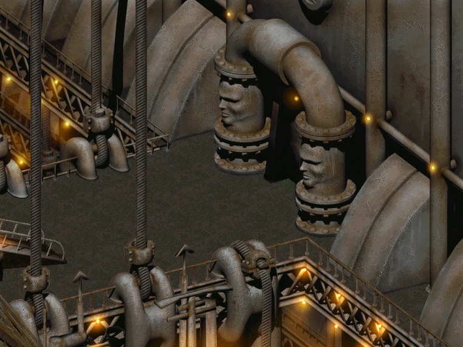
リグの入口となる大型ドックで、黄色いスポットライトで照らされている。
すべての到着船がここに接岸し、石油タンカー「PMVバルディーズ」も例外ではない。
エントリーホール
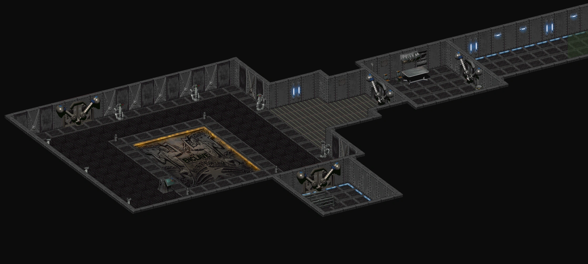
リグのエントランスホールで、強力な自動タレットが並び、施設への攻撃を愚かにも試みるすべてのものを殲滅するよう設計されている。
メインホールの床には「Enclave」と刻印された巨大なレリーフがあり、左下隅に小さなアクセスターミナルが設置されている。
ホールは螺旋階段を介して拘禁/R&D階と兵舎（待合室付きの通路経由）に接続している。
フランク・ホリガンとの最終決戦はここで行われる。
兵舎
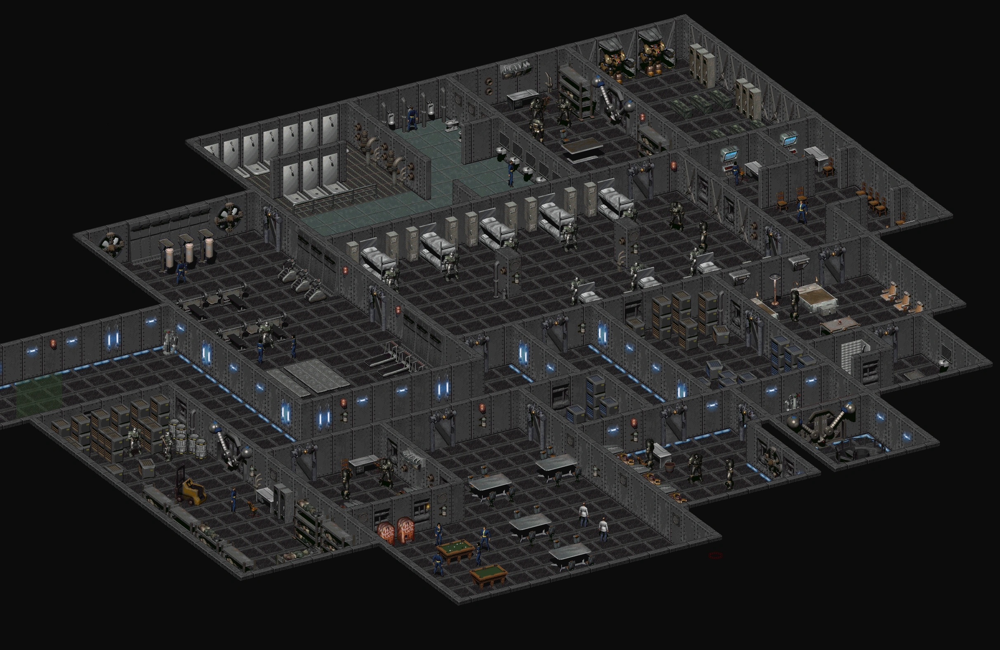
エントランスホールに接続する兵舎エリアには、T-51bパワーアーマーがフォークリフト代わりに使われている倉庫、兵員居住区（大型ジムとトイレ付き）、爆発物が備蓄された武器庫、兵士用の管理セクションおよび指揮官の居住区が含まれている。
防水扉の奥の螺旋階段が大統領階に接続している。
＞ 戦利品
倉庫: コンバットナイフ×2、スレッジハンマー×2、スーパースレッジ×1、パルスグレネード×1、スーパースティムパック×2、救急キット×2、Big Book of Science×1、Guns and Bullets×1
警備室: スティムパック×1
ラウンジ: フルーツ×6、ビール×5、ブーズ×3
兵舎: Wattz 1000レーザーピストル×1、パルスグレネード×1、クラブ×1、スーパースティムパック×1、スティムパック×2、2mm EC弾×300、電子ロックピック×1
管理区域: 花×1、金×13ドル
武器庫: T-51bパワーアーマー×1、ロケットランチャー×6、P94プラズマライフル×1、Wattz 2000レーザーライフル×1、アベンジャーミニガン×1、プラスチック爆弾×4、マイクロフュージョンセル×50、小型エネルギーセル×40、プラズマグレネード×2、フラググレネード×2、パルスグレネード×4、5mm JHP×100, 5mm AP×100、AP弾ロケット×4、炸裂ロケット×4
指揮官居住区: Glock 86プラズマピストル×1、マイクロフュージョンセル×50、小型エネルギーセル×40、パルスグレネード×2、ナイフ×2、クラブ×3、ブラスナックル×1、バール×1、投げナイフ×6、First Aid Book×2、Dean's Electronics×2、Scout Handbook×2
大統領警備チェックポイント: サイコ×1、Guns and Bullets×1
拘禁・研究階
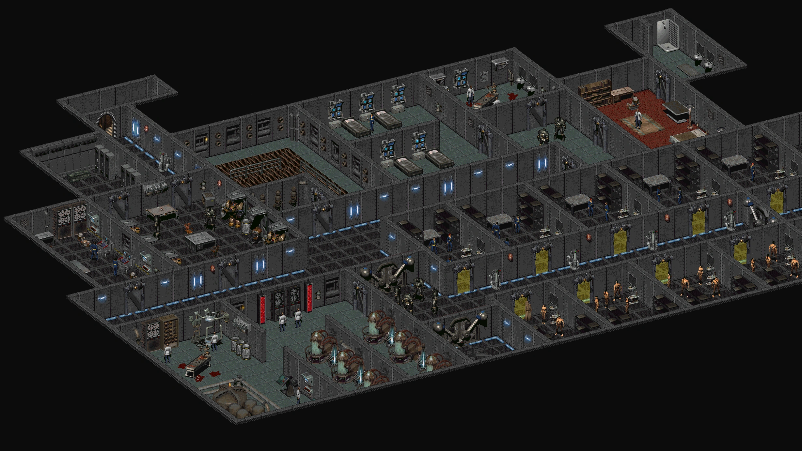
アロヨの村人とVault 13の住人を収容するための監房が設置されている。
また、小規模な研究室と医療施設、および倉庫エリアが含まれている。
エントリーホールの南に位置し、トラップルームに接続している。
＞ 戦利品
Dean's Electronics×2 — 科学者のオフィスの棚
First Aid Book×2 — 同じ棚と実験室内のロッカー
Guns and Bullets×1 — 警備チェックポイントのデスク
アクセス通路
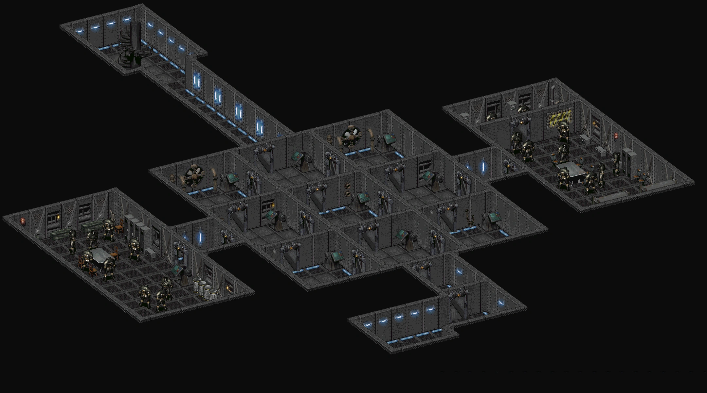
コンピュータ制御のドアと電気床を備えた一連の小部屋。
正しいコンピュータの組み合わせにアクセスしなければ、ドアが不幸な探索者を閉じ込め、電気床のなすがままにする。
2つの小さなサイドルームが倉庫とトラップからの休息を提供する。
北東の部屋の左側のサバイバルロッカーにG.E.C.K.が見つかる。
拘禁階の南に位置し、大統領階に接続している。
＞ 戦利品
G.E.C.K.×1 — 北東の部屋、左側のサバイバルロッカー
First Aid Book×3 — サバイバル/ギアロッカー内
Scout Handbook×3 — 同ロッカー
先進パワーアーマー Mk II×1 — パズルルーム右側の小さなアルコーブ
大統領階
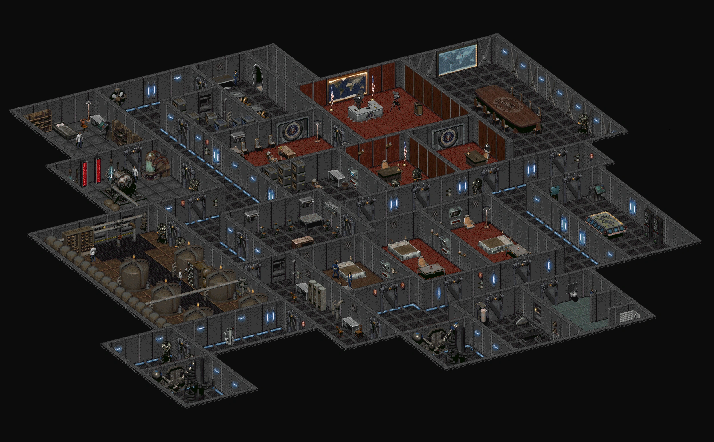
ディック・リチャードソン大統領、ダニエル・バード副大統領、リチャードソンの秘書、その他エンクレイヴのエリートが執務する区画。
また、爆弾、作戦室、会議室、FEVの実験が行われている医療施設も含まれている。
後方の階段が原子炉階に接続し、緊急階段が拘禁階に接続している。
チャールズ・カーリング大佐兼博士のオフィスは北西端にある。
彼と話すことで、選ばれし者は本土の人間がエンクレイヴと同じ種であることを彼に確信させる機会が与えられ、良心の危機を引き起こしてFEVカーリング-13を換気システムに投入させる可能性がある。
これにより、30分以内に保護されていない全人員（民間人と科学者、ただし名前付きキャラクターを除く）が死亡し、プレイヤーは彼らのアイテムを自由に回収できるようになる。
カーリング博士は選ばれし者に免疫を与え、エアロゾル化した予防接種を囚われた部族民とVault住民に施すため、彼らは影響を受けない。
原子炉階
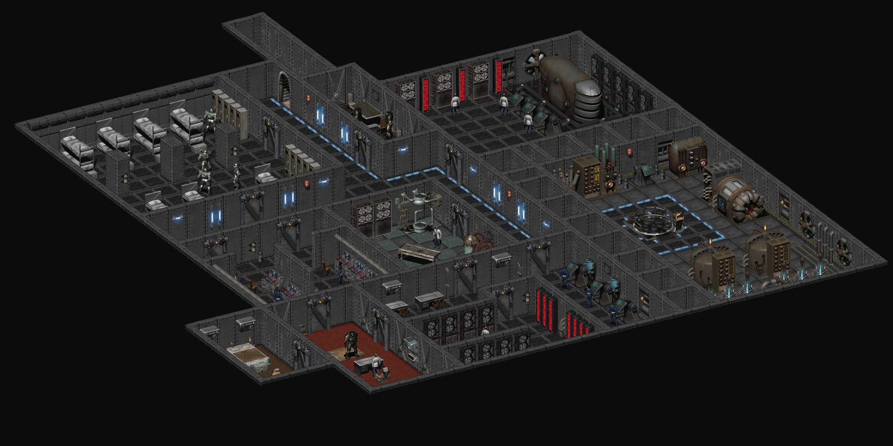
リグの最深部で、中央コンピュータ、リグの発電機、小規模な兵舎、そしてこれらを維持するための数名の科学者と市民が配置されている。
大統領階の階段からのみアクセス可能。
＞ 戦利品
Dean's Electronics×1 — メインフレーム室の科学者が所持
Big Book of Science×1 — 隣の科学者が所持
メモ
この場所のサウンドトラックは「Followers' Credo」で、元々はFalloutのボーンヤード図書館で使用されていた楽曲である。
登場作品
エンクレイヴ石油リグはFallout 2に登場し、Fallout: New Vegas、Fallout 4、Fallout 76およびそのアップデートSteel Dawnで言及されている。
舞台裏
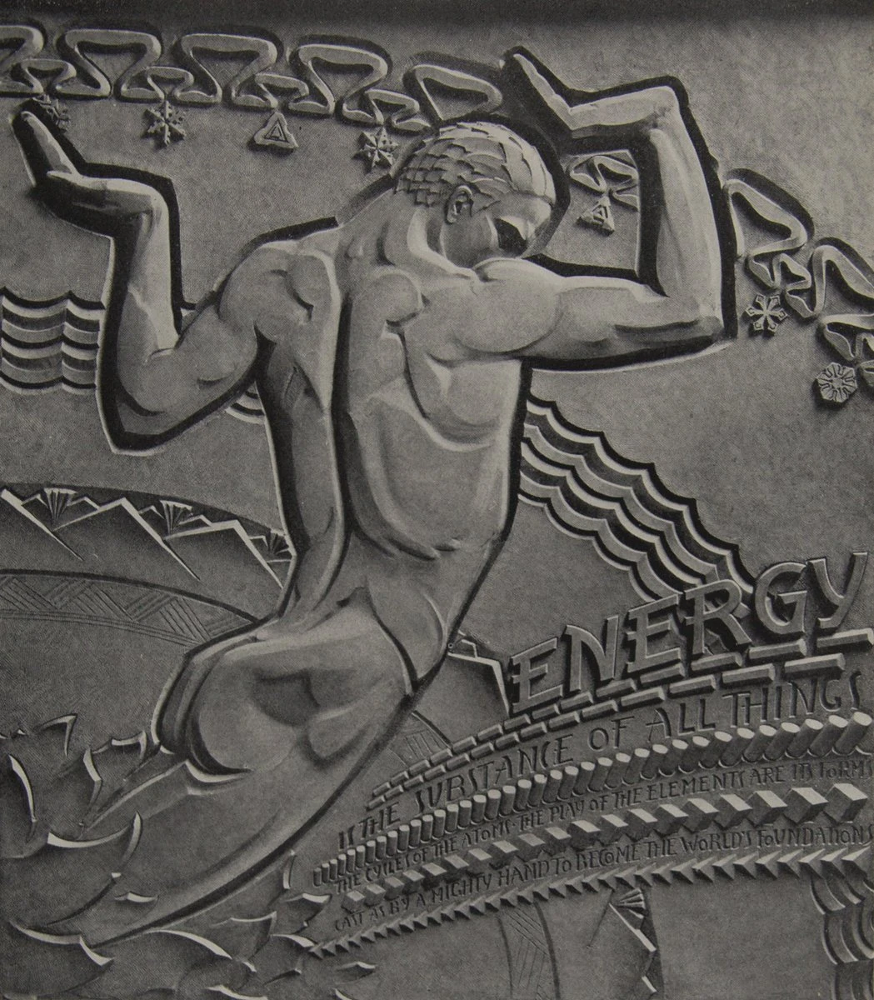
- クリス・アヴェロンによれば、石油リグの常駐住民数は60〜80人であった。
- ゲーム内でナバロ基地の中央コンピュータが提供する正確な座標は、実際にはフレズノとマリポーザの間、カリフォルニア州レイモンドの小さな池という、海岸から135マイル内陸の地点を指している。
- エントランスフロアのシールは、1933年のシカゴ万博に展示された実在のレリーフに基づいている。
- 石油リグの破壊はFallout Bibleで言及されている。
- Fallout 76の目的で石油リグのさまざまな要素が高精細でリメイクされた（特にエンクレイヴC.A.M.P.バンドル：エンクレイヴの壁、タレットセット、ライト、フラットレーザードア（拘禁階のフォースフィールドに基づく）、オフィス壁紙（リチャードソンのオフィスのもの）など）。
ギャラリー
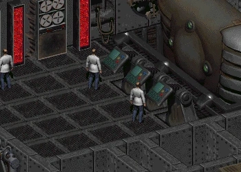
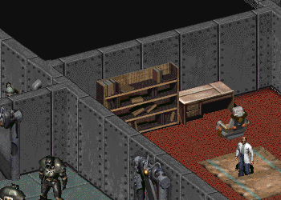
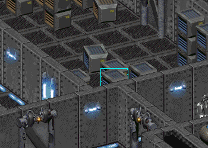
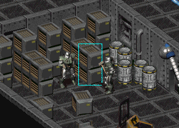
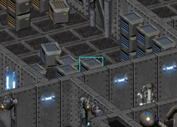
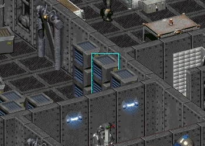
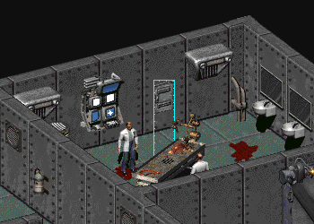
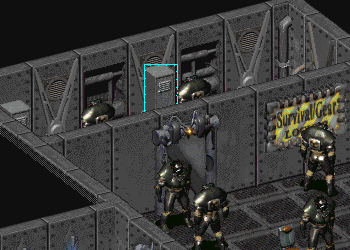
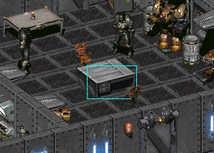
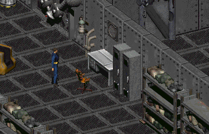
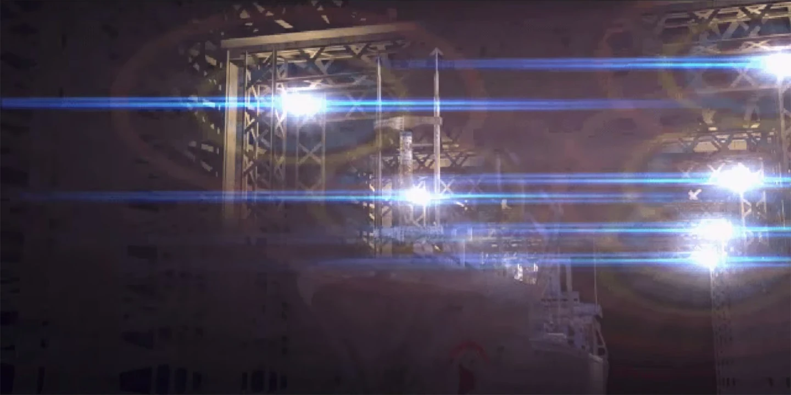
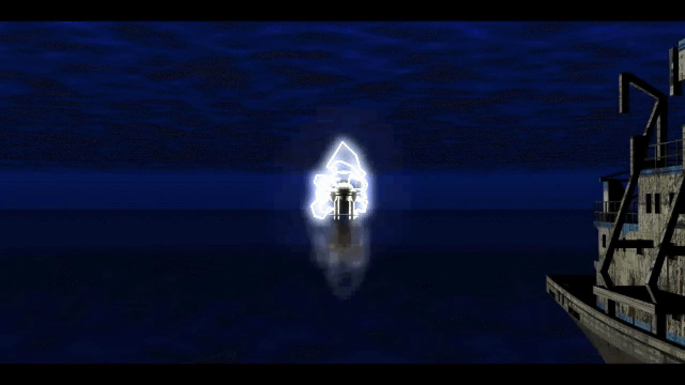
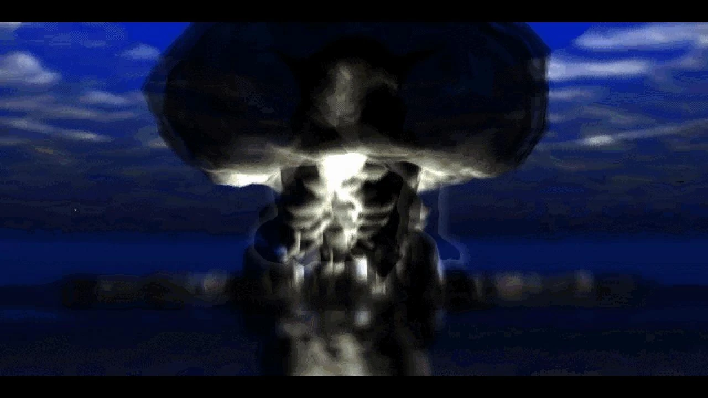
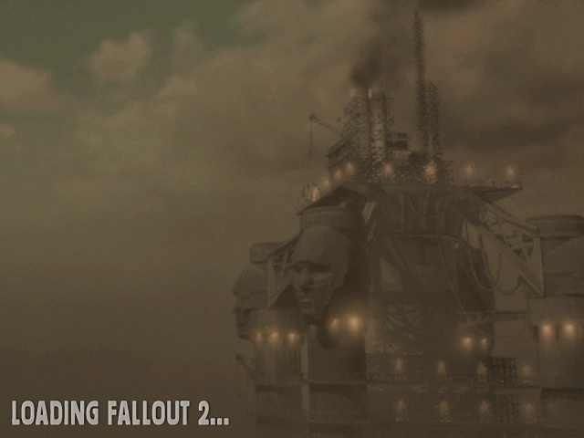
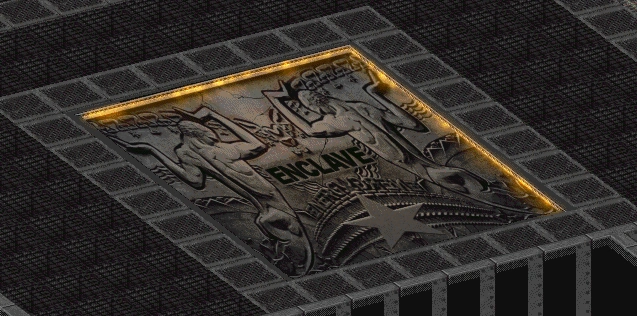
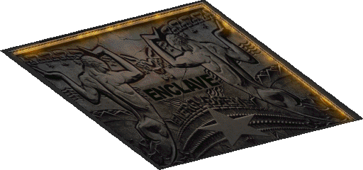
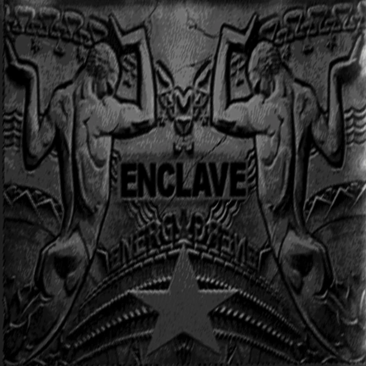
Magic: The Gathering
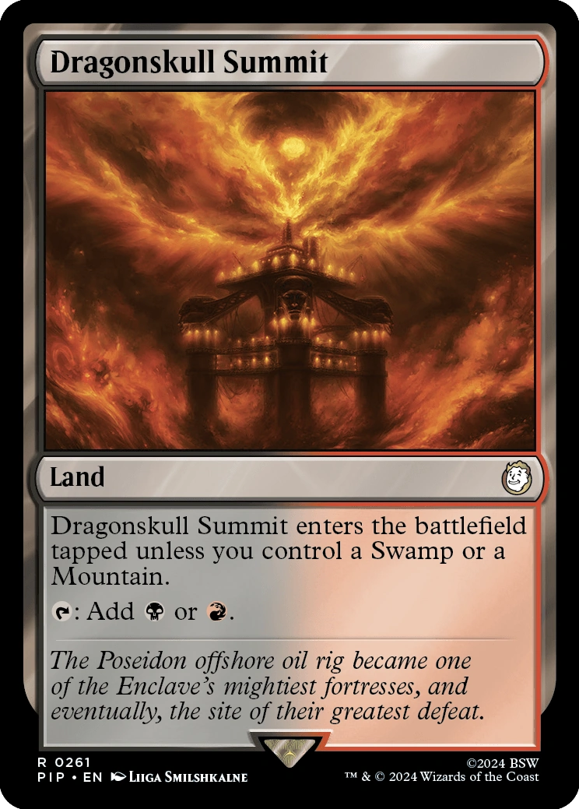
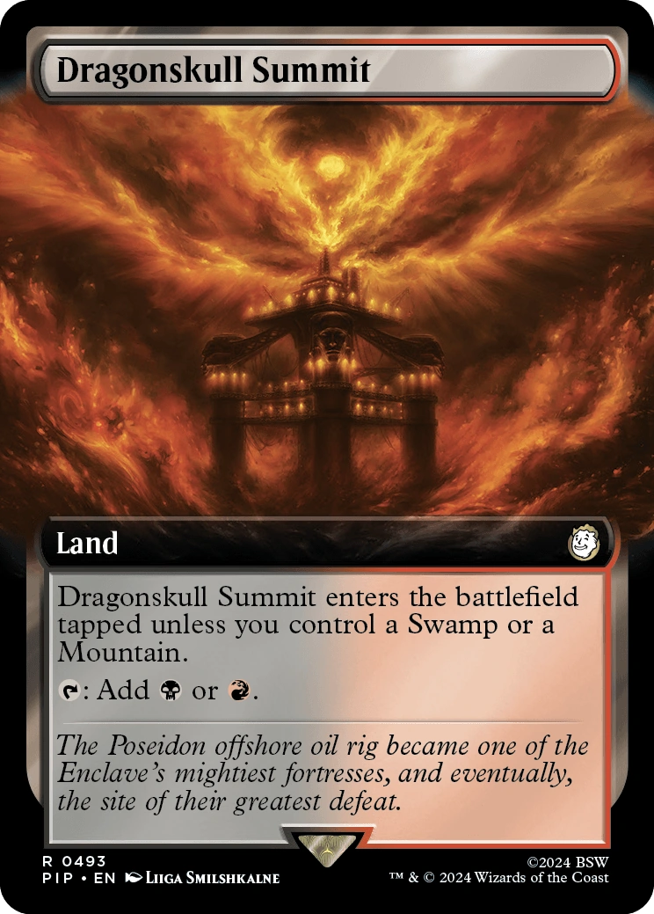
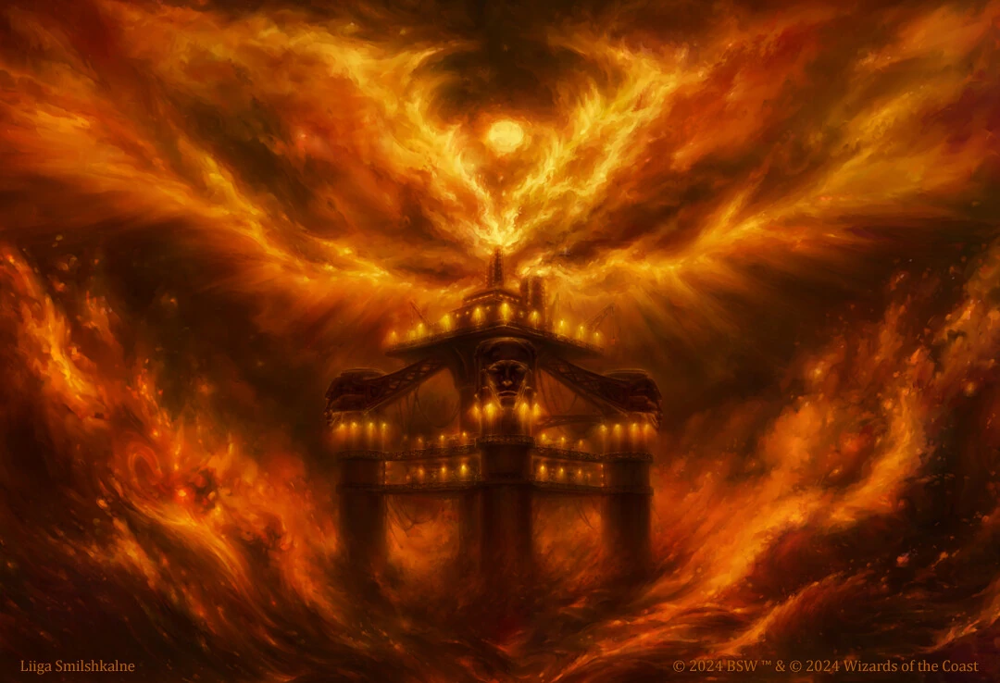
Fallout 2の最終ダンジョンにして、エンクレイヴの本拠地。
太平洋上の石油掘削プラットフォームという設定は、「影の政府」であるエンクレイヴの秘密主義と自己完結性を象徴しているように思えます。
160年間稼働し続けた原子炉が常に故障しているという設定が、文明の「末期」を感じさせて印象的です。
エントリーホールの床に刻まれた巨大な「Enclave」の文字が、1933年シカゴ万博の実在するレリーフに基づいているという裏話も興味深いですね。
選ばれし者がたった一人でこの要塞を攻略し、爆発させるという展開は、Falloutシリーズ屈指のクライマックスだと思います。
この記事は Nukapedia (Fallout Wiki)の「Enclave Oil Rig」の記事を日本語に翻訳し再構成したものです。
原文は Creative Commons Attribution-ShareAlike (CC BY-SA) ライセンスのもとで利用しています。
© Bethesda Softworks LLC. Fallout およびすべての関連ロゴ・名称は Bethesda Softworks LLC の登録商標です。
COMMENTS